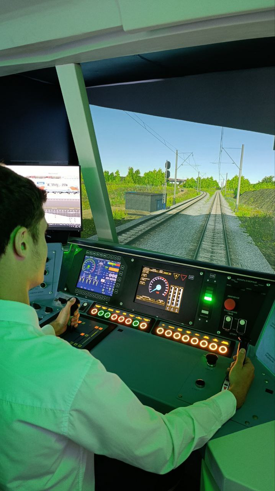
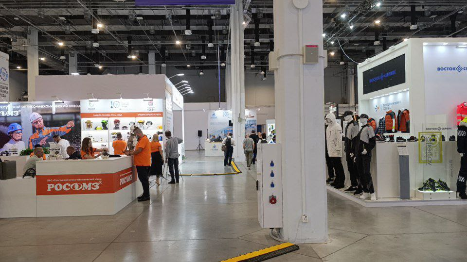
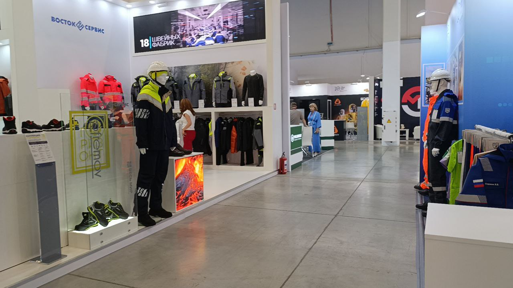
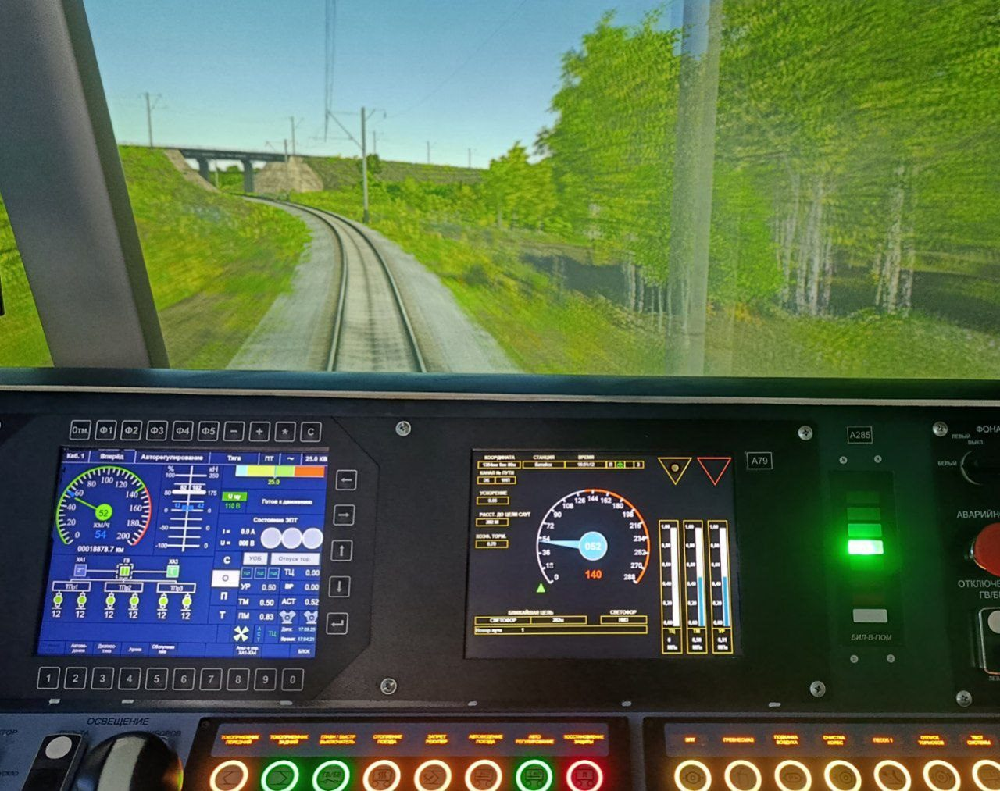
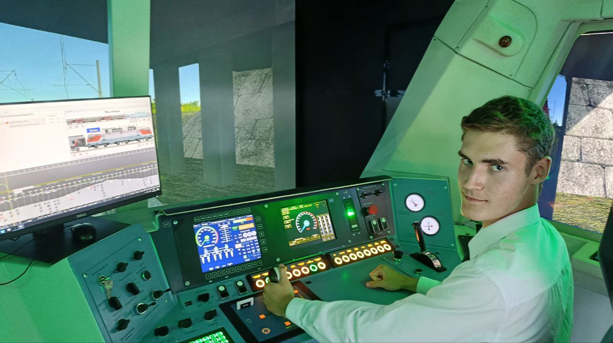
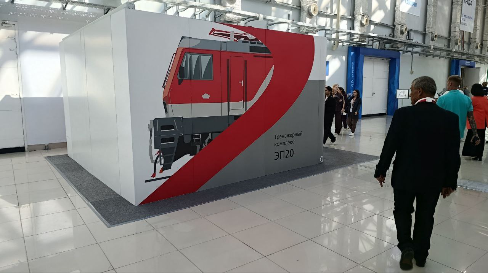
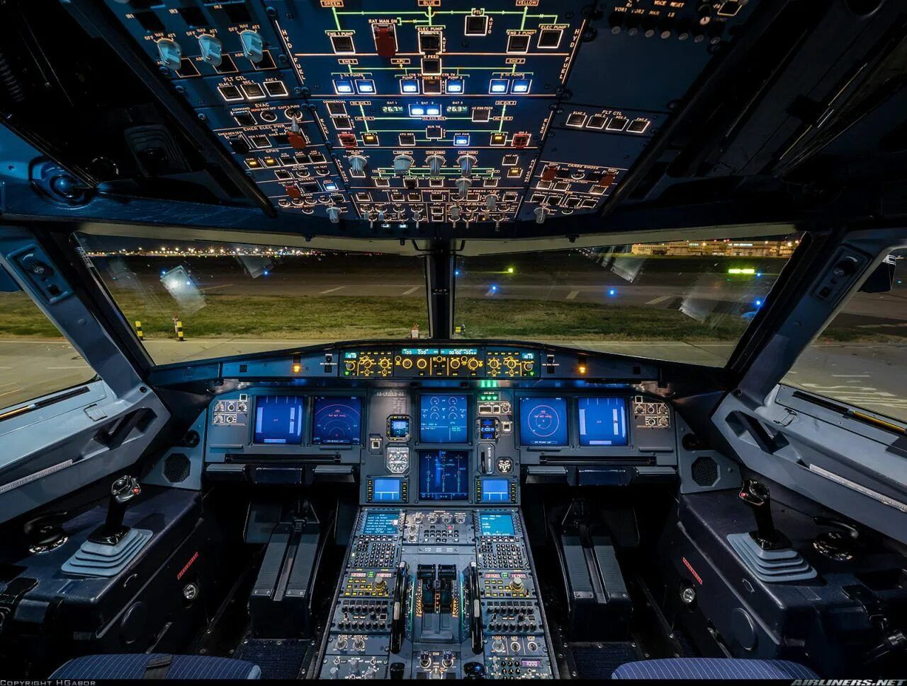
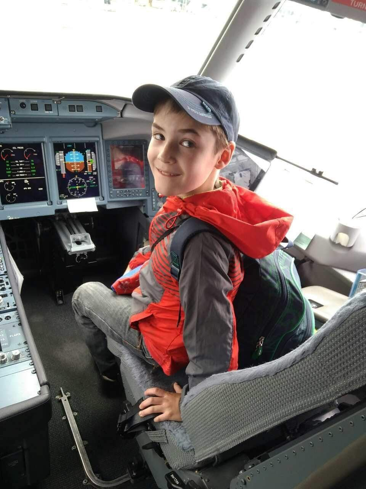

ВНОТ-2025 и кабина локомотива
В настоящий момент в Университете «Сириус» в очередной раз проходит Всероссийская Неделя Охраны Труда.
Всякие крупные или не очень, российские или международные фестивали и форумы проходят тут часто. В основном они, конечно, не по нашей специальности, но будут и такие активности, как форум «Микроэлектроника» или «Конгресс молодых учёных». Администрация универа постарается организовать нам статус участников.
Но что мы делаем, когда на мероприятие нас не зовут и у нас нет аккредитации? На переменах спокойно проходим в выставочную зону по студенческим билетам (ведь учебные аудитории разбросаны по всему университету, и никто не запрещает свободно перемещаться по всему зданию) и посещаем доступные активности. Часто удаётся хапануть бесплатные напитки или подарки от компаний.
И казалось бы, где я и где охрана труда, но, как оказалось, на ВНОТ-2025 участвуют компании, чьи разработки по-настоящему заинтересовали меня, и даже удалось конструктивно поговорить с представителями разных проектов. Особенно мне понравилась презентация инновационных очков для сохранения и улучшения зрения во время работы за компьютером и демонстрация способностей робособаки Госкорпорации «Росатом». С представителем атомного гиганта удалось обсудить волнующие современную роботехнику проблемы автоматизации предприятий и точки роста нашего проекта с «Больших вызовов».
В целом, в дни подобных активностей университет сильно преображается, и лично для меня интересно всё, что здесь проходит. Даже просто потому, что это круто расширяет кругозор и позволяет своими глазами посмотреть на развитие совершенно разных отраслей. И то, что фестивали часто не связаны с нашей сферой, совсем не минус, а огромный плюс: это позволяет не зацикливаться только на нашем предмете, а перенимать опыт и вдохновляться решениями современных лидеров отраслей.
Кабина локомотива
А теперь, собственно, о том, как я побывал в кабине локомотива пассажирского состава. Нельзя сказать, что это прям кабина, но то, что это настоящий тренажёр для машинистов, — это точно. На Всероссийской неделе охраны труда этот экспонат понравился больше всего, и сегодня я катался на нём около часа...
Благодаря экспертам, будучи не сильно далёким от ЖД, я быстро разобрался с управлением и следовал по междугороднему маршруту, старательно соблюдая все правила и указания машиниста. Конечно, не без казусов: несколько раз проезжали красный сигнал светофора, нарушали скоростной режим, и состав «вставал» — приходилось заново подключаться к контактной сети и начинать движение. Но это лечится только опытом и внимательностью. Пересесть с аэробуса на поезд — было очень необычно и интересно.
{kind=link}

{kind=link}

{kind=link}

{kind=link}

{kind=link}

{kind=link}

{kind=link}

{kind=link}

Последние 2 фото — более привычное для меня место работы. И, надеюсь, что рано или поздно тренажёрный комплекс «Аэрофлота» появится в Сириусе.